4 Module 4: Regression diagnostics
To begin, open the regressionDiagnostics.R file and run the first lines that clear the workspace and load packages. For future modules, I will not mention this but you should assume it. You now understand what rm(list=ls()) and library(foreign) do.
The easiest place to start with statistical analyses in R is with ordinary least squares (OLS) regression and the diagnostics associated. It is the most straightofrward implementation of the general linear model (GLM). In this module, I will look at:
- Creating an lm() object for regression
- initial assessment of output
- Generating:
- CIs
- ANOVA table
- Basic diagnostics
- plots
- scatterplots
- residuals and residual plots
- leverage statistics and plots
- Checking for heteroscedasticity
- Q-Q plots of the residuals
- added-variable plots
- dropping observations
I assume that you know what each of those things are. I will take a typical OLS regression and run it and generate quantities such as residuals and leverage and appropriate plots in a more or less classical tradition of influence and diagnostics. All of the tutorials you find on the web and in psych classes are reinterpretations of the classic papers of Bollen and Jackman (1985) and Stevens (1984), and probably also of Cook and Weisberg’s (1981) Regression Diagnostics, and the present guide is no different. Occhipinti and Tapp (2018; Data preparation chapter in Brough, P. [Ed.] Advanced Research Methods for Applied Psychology: Design, Analysis and Reporting; Routledge) provide a handy, chapter length treatment of this and of the principles of preparing data for analysis (shameless plug alert) but consider looking at Bollen’s and Stevens’ papers directly!
4.1 OLS Regression in R
As you have seen already in Part 1, regression is easy. It makes use of the lm() function and a moment’s deduction shows that lm stands for linear model. It is always best to send the output of lm() to an object for examination via summary() or further processing, as I will show below.
The following line of code is in the linearModels.R file and it is repeated below. Before it runs, make sure to read the data into an object called binge. Note that the regint object should be in your environment after you have run it. As we have assigned the function’s output to an object, you will only see the code itself echoed in the console.
To reiterate the prototypical form of regression via lm(), see the below:
lm(DV ~ predictor + predictor … + predictor, data=data frame object)
This is very easily modified to incorporate things such as product terms for moderation or curvilinear analysis. For example, note the tiny difference (covered later in more depth):
lm(DV ~ predictor + predictor … + predictor*predictor, data=data frame object)
To examine the output of the regression, the base R function is again summary():
##
## Call:
## lm(formula = intervention ~ age + sex + hospitality + conservative,
## data = binge)
##
## Residuals:
## Min 1Q Median 3Q Max
## -3.3854 -0.6485 0.0366 0.7241 2.7071
##
## Coefficients:
## Estimate Std. Error t value Pr(>|t|)
## (Intercept) 2.44444 0.16079 15.202 < 2e-16 ***
## age 0.02695 0.00275 9.799 < 2e-16 ***
## sexfemale 0.24741 0.07617 3.248 0.00121 **
## hospitalityyes -0.10715 0.11840 -0.905 0.36577
## conservative 0.45265 0.05564 8.135 1.64e-15 ***
## ---
## Signif. codes: 0 '***' 0.001 '**' 0.01 '*' 0.05 '.' 0.1 ' ' 1
##
## Residual standard error: 1.052 on 773 degrees of freedom
## Multiple R-squared: 0.208, Adjusted R-squared: 0.2039
## F-statistic: 50.76 on 4 and 773 DF, p-value: < 2.2e-16For most uses, this will be fine as the point of checking generally is to ascertain the nature of the results before planning a next move. However, to illustrate the flexibility of R, consider that a textbook author and statistician called Julian Faraway decided that the information contained in the summary() output was a bit bloated and redundant when running many models and checking them as for a large analysis. He wrote his own version and called it sumary() [n.b., the single m is not a typo]. You don’t need to install the faraway package that goes with his text (it can be very useful), but the output of his function is below. Also note how I have called the function to avoid loading library just for this aside.
## Estimate Std. Error t value Pr(>|t|)
## (Intercept) 2.4444368 0.1607920 15.2025 < 2.2e-16
## age 0.0269503 0.0027504 9.7987 < 2.2e-16
## sexfemale 0.2474107 0.0761662 3.2483 0.001211
## hospitalityyes -0.1071476 0.1184006 -0.9050 0.365770
## conservative 0.4526499 0.0556413 8.1351 1.638e-15
##
## n = 778, p = 5, Residual SE = 1.05242, R-Squared = 0.21It’s certainly neater and focuses on the b-weights (i.e., Estimate column) and their associated standard errors, t values and p values (Pr(>|t|), note exponential notation). However, it does not echo the code containing the function call, but depending on how you write and run your code, this may not matter.
4.2 Working with the lm() object
Apart from the summary-type functions above, you may want more information anout specific aspects of the analysis. Remember, R deliberately does not spit out everything that could possibly be generated from a statistical procedure. Consider the below:
## 2.5 % 97.5 %
## (Intercept) 2.12879611 2.76007747
## age 0.02155116 0.03234934
## sexfemale 0.09789357 0.39692782
## hospitalityyes -0.33957248 0.12527726
## conservative 0.34342386 0.56187589The confint() function gives 95% CIs by default. What if 99% CIs were required? The level parameter to the function can be explicitly specified to change that. Try: confint(regint, level = .99).
## Analysis of Variance Table
##
## Response: intervention
## Df Sum Sq Mean Sq F value Pr(>F)
## age 1 136.78 136.777 123.4908 < 2.2e-16 ***
## sex 1 14.12 14.122 12.7503 0.000378 ***
## hospitality 1 0.68 0.683 0.6163 0.432648
## conservative 1 73.30 73.301 66.1805 1.638e-15 ***
## Residuals 773 856.16 1.108
## ---
## Signif. codes: 0 '***' 0.001 '**' 0.01 '*' 0.05 '.' 0.1 ' ' 1Take care when running the code below from R Studio. To see the plots, you need to click into the console pane of R Studio and push the Enter key once for each plot. The plots will pop up in the Plots pane below the console. Each can be zoomed into, exported as an image or as a PDF, or copied to the clipboard to paste into other programs such as Word, Powerpoint, or their open source equivalents. (Try it!)
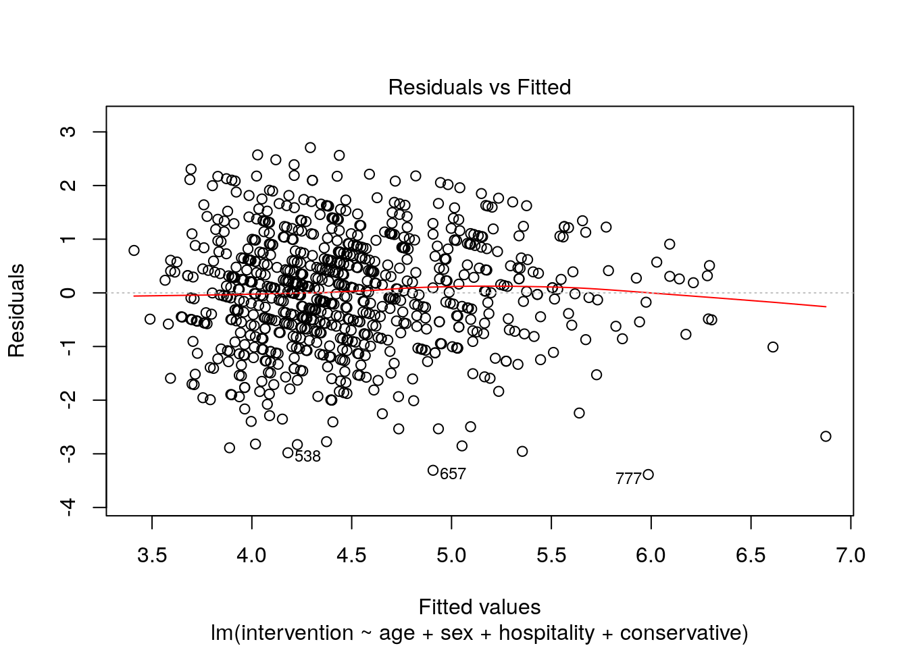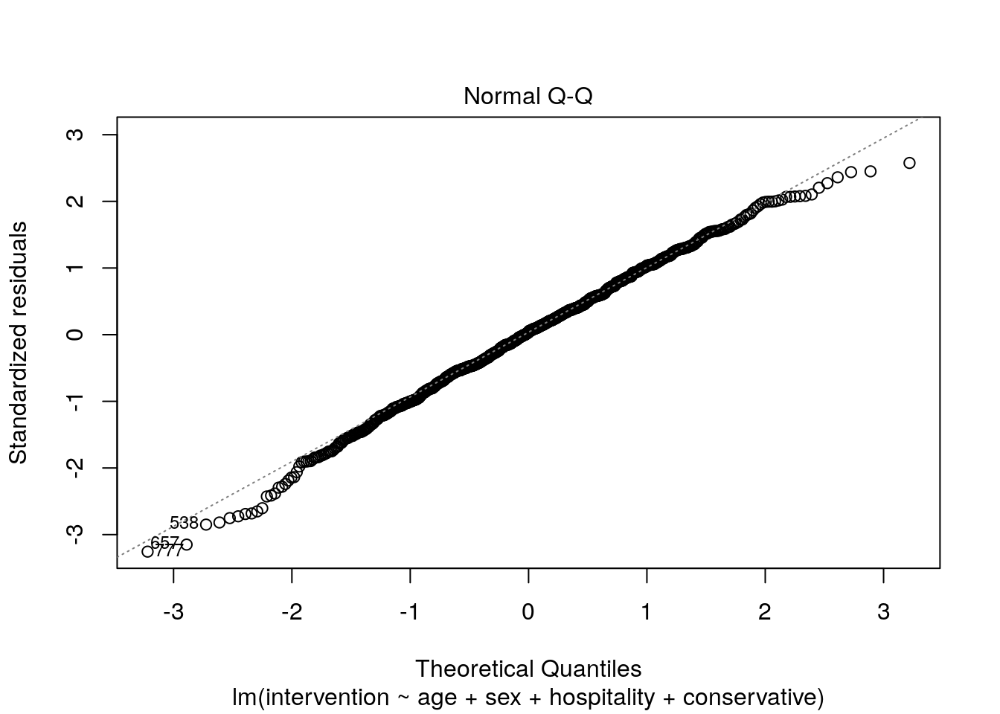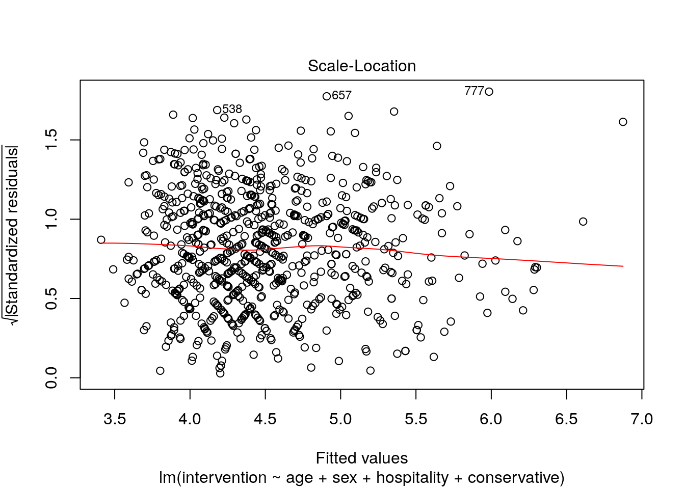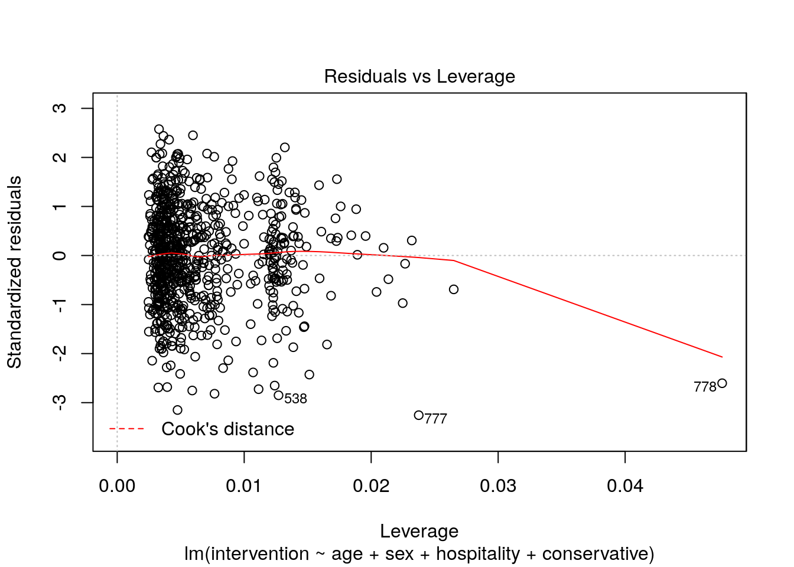
Note that these plots are the absolute basic, default level of graphics in R. It only gets better as you master other graphics functions. Also, note that in each case, you simply pass the lm() object regint into each new function and R does the necessary translation. An lm() object is of a special class in R but unless you are programming, you don’t need to do anything about it. This is by design. R is modular like this and it makes doing stats much clearer for many people. After learning some of these concepts, the stats software stays out of the way of your learning about statistics.
4.3 Simple Diagnostics
It is often useful to plot the criterion (i.e., Y variable) against the predictors (i.e., X variables). A simple bivariate plot can be obtained with the same plot() function used above. Again, note the modularity. R realises that the input to plot() is not an lm() object but is a pair of continous variable, so it produces a scatterplot:
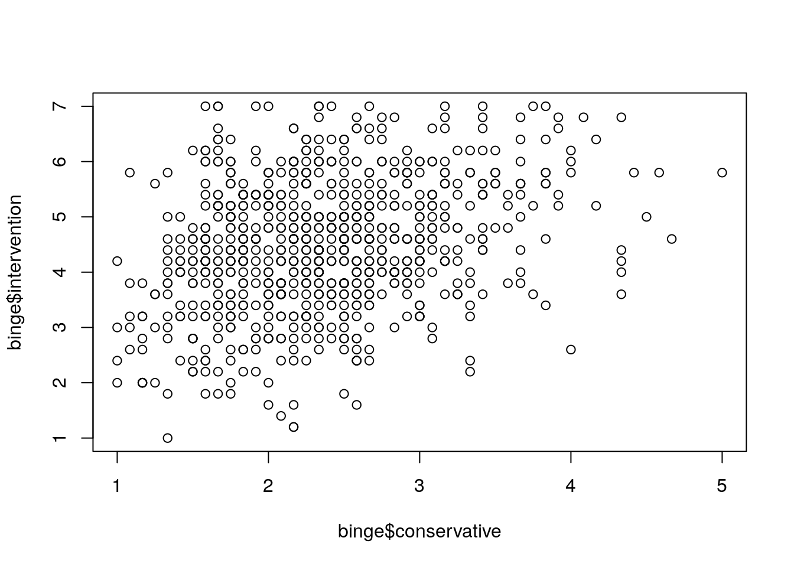
If instead plot() were fed a continuous Y variable and a discrete X variable:
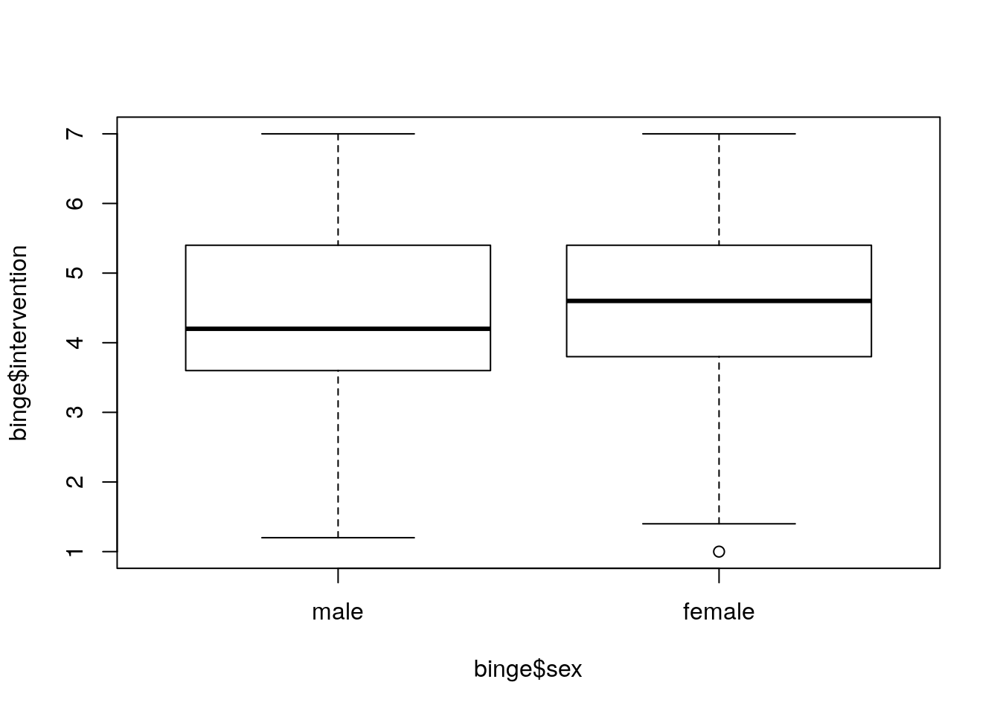
Further, if you wanted a few plots of variables from the BDRV data that is contained in the binge object and didn’t want to have to type binge$ each time, you could use the same data = parameter as for the lm() function calls above:
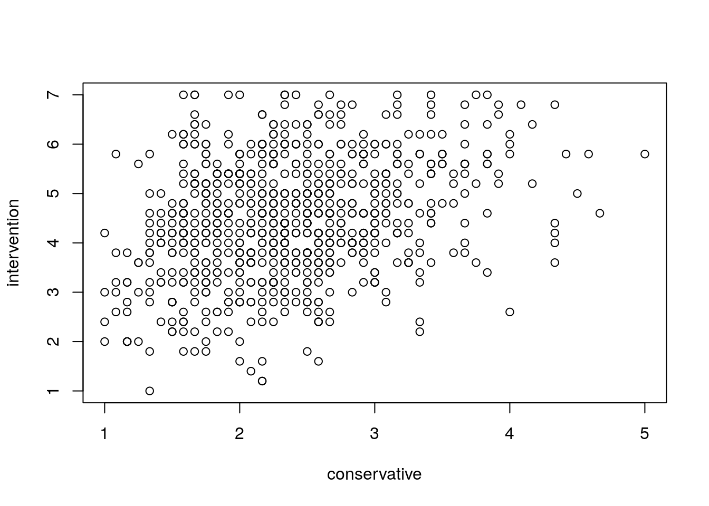
In multiple regression, it is often of interest to obtain a series of scatterplots of all the predictors with the criterion and most software facilitates this. This function is from the car package, that you loaded at the head of the linearModels.R file.
## Loading required package: carData## Registered S3 methods overwritten by 'car':
## method from
## influence.merMod lme4
## cooks.distance.influence.merMod lme4
## dfbeta.influence.merMod lme4
## dfbetas.influence.merMod lme4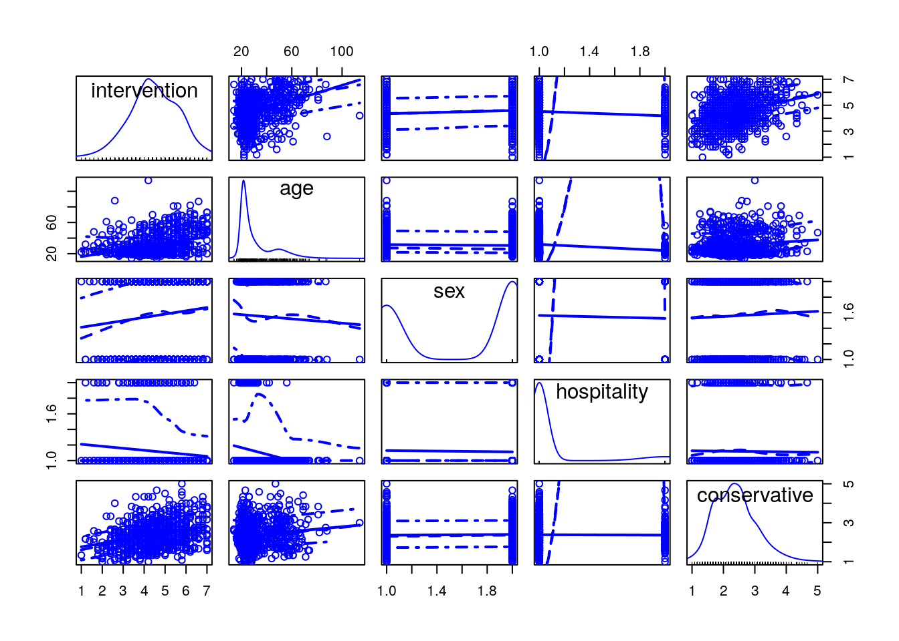
This is an example of a user written function that improves the way many can do statistical analysis. the car package was written for the textbook Companion to Applied Regression by Fox and Weisberg that is itsel loosely based on Applied Regression Analysis and Generalized Linear Models, by Fox. The car package is very widely used and pops up as a dependency in many other packages.
This type of figure has the (smoothed) distribution of each variable on the main diagonal and the first column (or row) has the scatterplot of the criterion variable with each predictor in turn, with fit lines and confidence bands. On the other offdiagonal elements are found the respective scatterplots of the predictors with each other. Note the distinctive pattern associated with predictors that are dummies. There is a great deal of worthwhile visual information in this figure.
Moving along with the diagnostics, the first quantity of interest is almost always the residuals. As the residuals are expressed in the scale of the criterion variable, they are usually standardised in some way to facilitate comparison with standard population values. There are various ways to standardise and in 6020PSY we teach studentized residuals with a cutoff of +/-3.3 but this is somewhat arbitraty (some authorities suggest lower cutoffs or different types of standardisation; whatever you do, be consistent!). The following line extracts the studentized residuals and assign them to a new object called stud.res (note the aptly named function)
Your new friend the plot() function is used to generate the plot of residuals to check that they are centred around zero and are approximately normal (note that the residuals are on the Y axis. Again, it correctly guesses the type of plot required given the input it has received. The ylab function labels the Y axis. More on the ylim parameter, that sets the minimum and maximum limits of the Y axis, below.
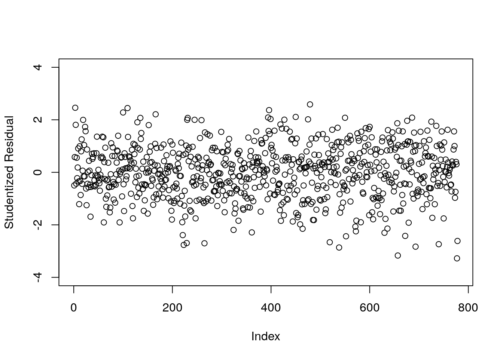
In the code snippet above, the Y axis parameter ylim is set with the format c(-4, 4). The c() function is actually the way that lists of elements are input to parameters and functions as required. The c stands for combine. It is an extremely frequently used function (probably the most used in R) and has a large role in and out of statistical analysis. Using c() with lists and with special operators to repeat values or patterns is easily worth a chapter in a manual and is well outside the scope of this regression module. For users, when you see c(), you know that a list or series of elements is to be input. In the code snippet above, c(-4, 4) is used to give the minimum and maximum points of the Y axis in the plot. Consider what c(1,8) would produce. Note also that the code above shows that functions can be nested flexibly and not only as whole functions as in previous examples. c(-4, 4) is used to provide input to a specific parameter of plot() and not as the whole input.
A further modification is possible and it demonstrates how R can optimise analysis. In the above, -4 and +4 were chosen as Y axis limits as the residuals of interest in diagnostics are the extreme ones, defined here as larger than 3.3 in absolute value. Calling the plot() function without ylim makes a plot with a Y axis a tiny bit larger than the actual minimum and maximum values and using -4/+4 creates a meaningful, symmetric frame around them. However, in this and other occasion, the user might want a plot with Y axis limits that match the actual minimum and maximum values of the data. The below makes a plot with Y axis limits 1 point larger than the actual minimum and maximum in the data, in absolute value.
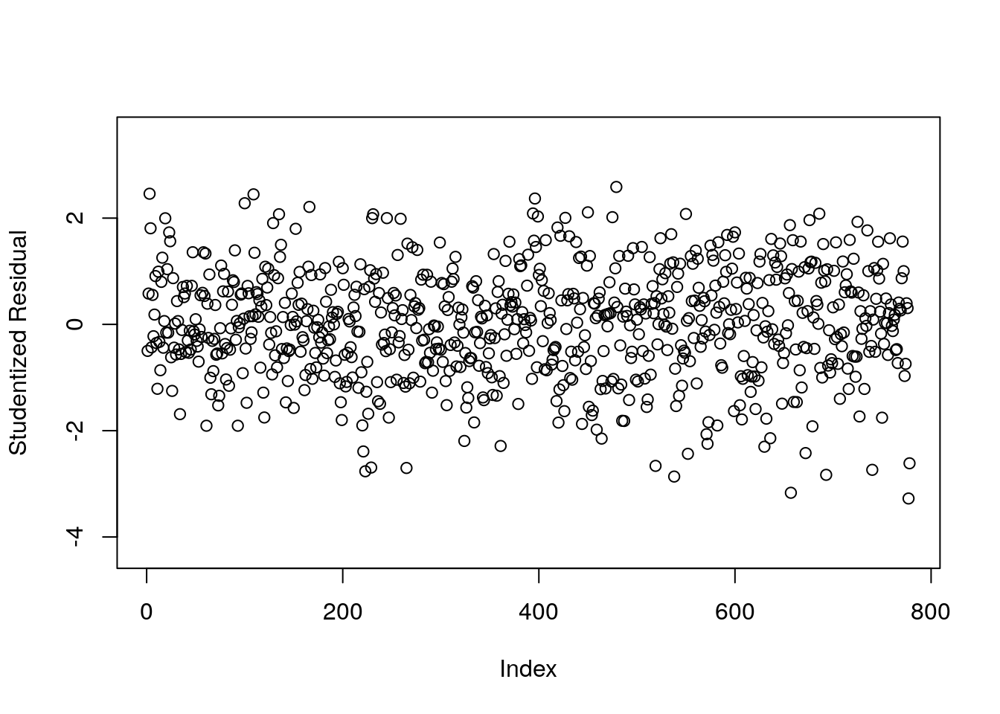
The code shows how functions can be substituted for fixed values and even used in arithmetic almost everywhere in R. min(stud.res)-1 uses the min() function on the quantity that is being plotted stud.res and says, take 1 away from whatever the actual minimum is. The same is true analogouslyt for the scale maximum. This code snippet can be copied and pasted anywhere a plot is required that needs to be limited by the data as long as the variable stud.res is subsituted by the new variable. And the general principles can be applied all over R.
The important diagnostic information that is efficiently conveyed by this plot is that the positive residuals are all well within the bounds of acceptable values (in this case, they seem < 3). By contrast, the negative residuals seem to stretch out to the nonacceptable region and it seems the regression model in this data makes a strong overestimate of the true scores for some observations (i.e., remembering that as True score = Predicted Score + Residual, then Residual = True Score - Predicted Score).
However, rather than simply use a visual estimate, it is very easy in R to overlay a set of horizontal lines at milestone residual values, such as -3, 0, and +3. This is achieved with a special function called abline() that runs after plot() and overlays lines over the last plot that was called.
abline(h =c(-3.3,0,3.3), lty = 2)
This plot shows clearly that there is one point just on the -3.3 line and at least one point that is so close as to merit further assessment, depending on the remaining diagnostics.
The abline() function has to be run after a call to a plotting function and if this is not done it will simply produce an error message. It is worth taking this line of code apart to learn the devices in it.
h =is asking for a horizontal line at Y = whatever number is given. A vertical line at X = whatever number is given would be called for withv =- I could have written a single number,
h = -3.3to get a single line but I used c() to make a list and abline() is smart enough to know that if a list is sent, then multiple lines are called for. lty = 2is a parameter set to the value for a dashed line (i.e., 2). If this parameter is left out, equivalent to adding inlty = 1, the default solid line is produced. A value of 3 makes a dotted line and further numbers produce variations. These are all given in the help() entries.
You could try running the plot() + abline() pair a few different times with changed options to see the effect on the plot.
Another useful device in making plots for diagnostics is to label the points with an ID or other identifying mark from the data so as to make it easier to identify any potentially influential points discovered. Some useful functions from base R and car may label discrepant points with R’s generated row numbers from the data frame so it is handy to know how to print out each of these where required. Below, the steps to create appropriate labelling variables and then to apply these logically to later plots and diagnostics will be stepped through sequentially. Each line is a necessary logical step that ordinarily runs in direct sequence with the others. I have inserted commentary between them for the sake of learning and explanation.
The next step in diagnostic analysis is to locate potentially influential cases in the data by examining values of statistics such as leverage and Cook’s D. Software such as SPSS sutomatically lists 10 largest, 10 smallest and so on of a given statistic and sometimes this shotgun approach can cause its own confusion. In R you will learn to make your own lists and to only include the values that are needed, rather than the 10 “best values” like a Buzzfeed list. For example, you know already that positive residuals are unlikely to be a problem in the BDRV data.
A common approach to this type of task is to make a new variable or object to hold the output of a procedure and then to list these using logical operators in R code. It is easiest to learn by doing these basic tasks.
First, collect which, if any, data points have values outside a +/- 2.7 cut-off. I chose 2.7 as the cutoff here as I know that there is at least one point just smaller than 3.3 that needs to potentially be looked at. You could tweak this value by trial and error in your own data if necessary. The row numbers of the potentially discrepant values are assigned to the new object called index (again, the name is arbitrary).
This code uses which(), a handy logical function in R that evaluates the logical truth (or falsity) of the condition in the parentheses. Only for observations where the condition is true, which() outputs the row name R lists in the data frame for that observation (i.e., when the condition is false, nothing happens for that observation). For the current example, stud.res > 2.7 | stud.res < -2.7 means, “either the value of stud.res is greater than 2.7 or the value is less -2.7”. As a logical condition, this is only true for observations with residuals outside +/- 2.7. After which() has run, there will be an object called index in the workspace and it will only contain 7 values (223, 265, 538, 657, 693, 740, 777) which are the cases with potentially extreme residuals. Check the Environment pane and also note how the objects are starting to build up!
I can take advantage of the logical status of index that only contains row number values for discrepant observations in the residuals by feeding it into the input of another function, called text(), whose job is to attach labels to points in plots.
text(index-30, stud.res[index] , labels = binge$ID[index])
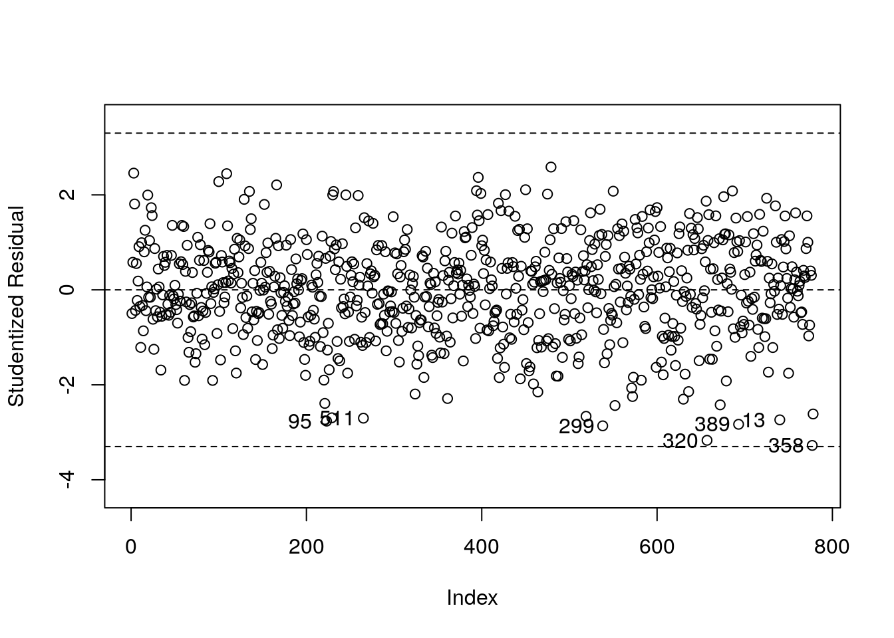
index-30= x co-ordinate of the labels; place the labels 30 pts to the left of the data point (i.e., arrived at by trial and error; a value between 20-40 always works; set and forget)stud.res[index]= y co-ordinate of the labels; this is slightly trickier; means “label the stud.res values according to the row numbers in index”; the trick is that index only exists for the discrepant observations so only they get a labellabels = binge$ID[index]; use the variable ID in the data frame binge and match it with the row name from index. Again, index only exists for the discrepant observations so only they get a label
This may seem complex but it has already been written and tested! All you need to do in future is paste this code and make sure the variable and data frames match the new data you have. In the meantime, as you gain experience in R you will be able to understand the logic more clearly and will be able to build on this to do other tasks.
The remaining step is to print out both the R row numbers and the actual ID numbers with the following print() call:
## 223 265 538 657 693 740 777
## 223 265 538 657 693 740 777 95 511 299 320 389 13 358The first set of numbers (don’t worry that there are two of them, there’s a reason that isn’t important!) are the row numbers and the second set are the ID variable values for the discrepant observations. These are the values to look for in the next part.
Next, a common approach it to assess influence directly as a function of both distance (residuals)and leverage (hat). The car package has a very useful function called influencePlot(). This creates the classic residual X leverage plot. If you are used to the SPSS version of this plot, the car version will seem on its side. The values with simultaneously high leverage and extreme residuals (as defined by Fox and Weisberg) are in the top and bottom right hand zones of the plot. The function makes use of dynamically generated dotted lines to mark out the quadrants of influence. As well, the plot markers are circles whose area is proportional
to the value of Cook’s D; a larger circle = more extreme. Very handily, the output of this function also contains a print out of the observations with the largest residuals and lists the corresponding values of leverage (hat) and Cook’s D.
## StudRes Hat CookD
## 329 -0.6901894 0.026502865 0.002595488
## 657 -3.1685132 0.004750005 0.009472262
## 777 -3.2760989 0.023745130 0.051560996
## 778 -2.6140906 0.047640429 0.067854846This diagnostic suggests it is important to examine the observation with row number 778, as well as 329, 657, and 777, the latter three of which were flagged in the residuals analysis.
To check what ID number belongs to that case, the print() function is used again. Evidently, case 212 in the BDRV data can be added to the discrepant observations obtained from residuals analysis.
## [1] 212Checking for heteroscedasticity with a residual vs. fitted value plot. The function that is used is still plot(). The regression object generated above (i.e., regint) already contains the values that are needed. All that remains is to specify the input parameters. As an lm() object, regint has a known structure. You wouldn’t normally bother to check, because every lm() object would look the same as that is the point of objects. I have listed it below with the ls() function.
## [1] "assign" "call" "coefficients" "contrasts"
## [5] "df.residual" "effects" "fitted.values" "model"
## [9] "qr" "rank" "residuals" "terms"
## [13] "xlevels"The two quantities needed for the heteroscedascticity plot are the residuals and the predicted scores. The plot() code is below. Note that the same approach ($) is used to specify subparts of an lm() object as is for a data frame object
The usual interpretation of this plot (healthy rectangle or fearsome fan?) is made. As well, using the now familiar abline() function it is possible to add a horizontal line at Y = 0 to aid visual judgement (i.e., also helps in visual judgement whether the residuals are approximately centred around zero?)
abline(h = 0, lty = 2)
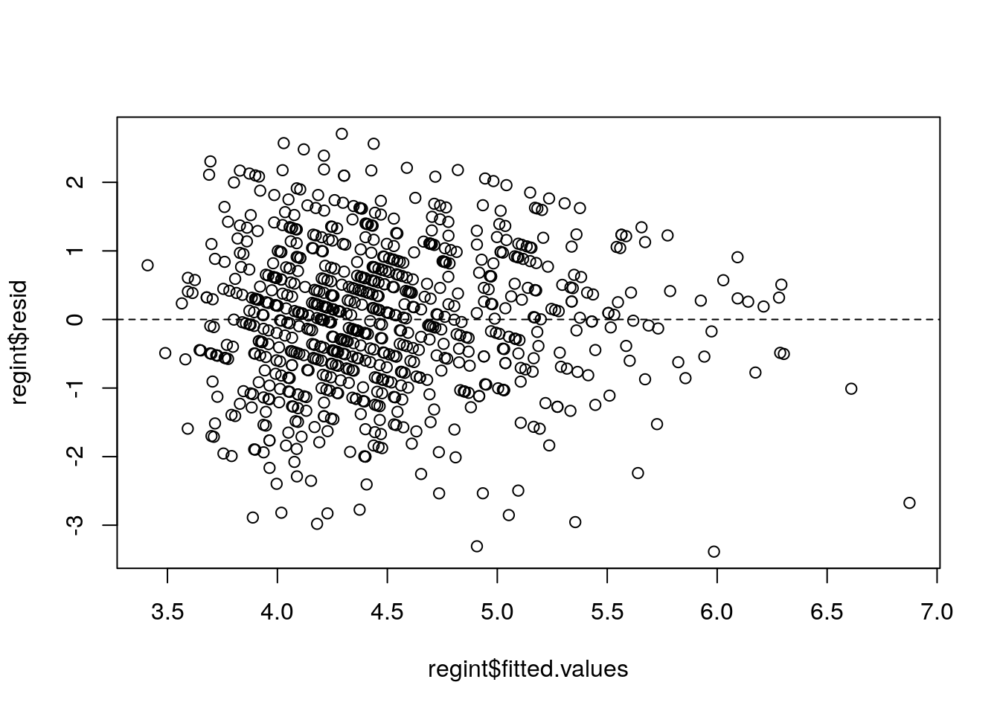
Making a Q-Q plot of the residuals to further assess normality. The car package provides a nicer and more useful Quantile-Comparison (Q-Q) plot than the base R versions (and base R takes two function calls to make something similar). The standard interpretation of these is that they show the studentized residuals plotted against the appropriate t-distribution (all this is modifiable) and if the residuals are distributed appropriately, they will sit on or very close to the main diagonal line. Any such deviations indicate nonnormality.
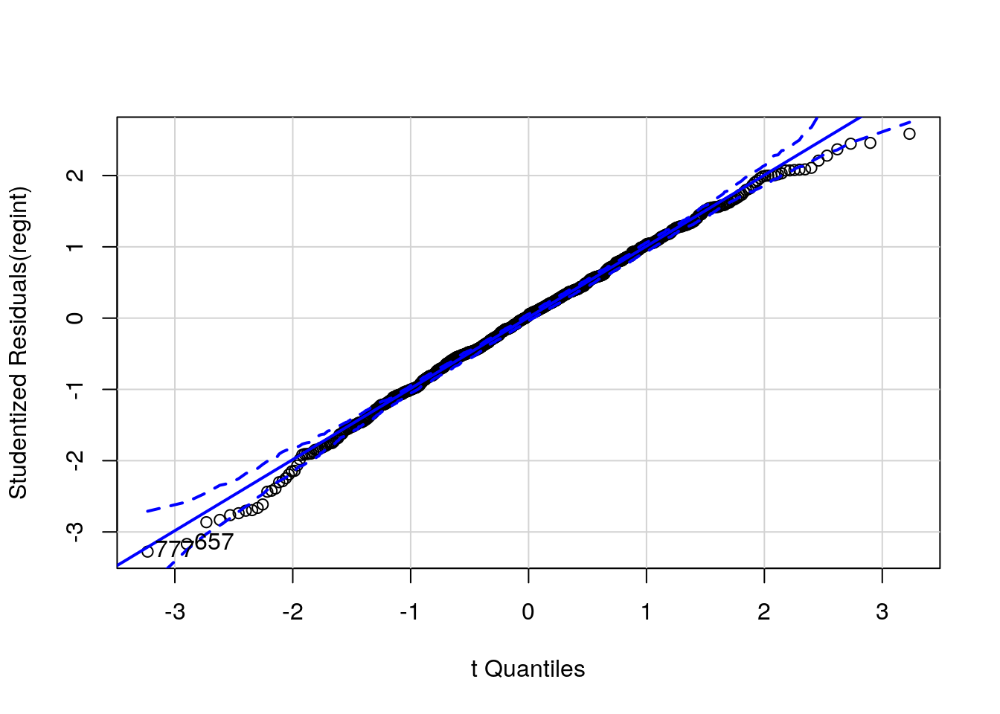
## [1] 657 777The residuals pull away from the line at each end, characteristic of thick tailed distributions. qqPlot() also includes bootstrapped 95% CIs and it is of interest as to whether the points exceed this band. The output suggests that some do, around the t = -2.5 to -2.2 zone. However, the most extreme studentized residuals (row numbers = 657, 777) do not do so.
Added-variable plots, aka partial-regression plots are based on the association of a predictor with the criterion with all other predictors controlled for. Essentially, they are plots of the predictor and the criterion, residualised for all other predictors. The fit line has the same slope as for the standard regression. The really useful aspect of these plots (since the early references on diagnostics) is that they help to ascertain the observations that singly or in groups may be influencing the regression lines. In a similar way to the visual assessment of bivariate outliers, added-variable plots can emphasise the observations that sit in a position contrary to the trend described by the regression line. The avPlots() function from car presents the needed plots and include the regression lines.
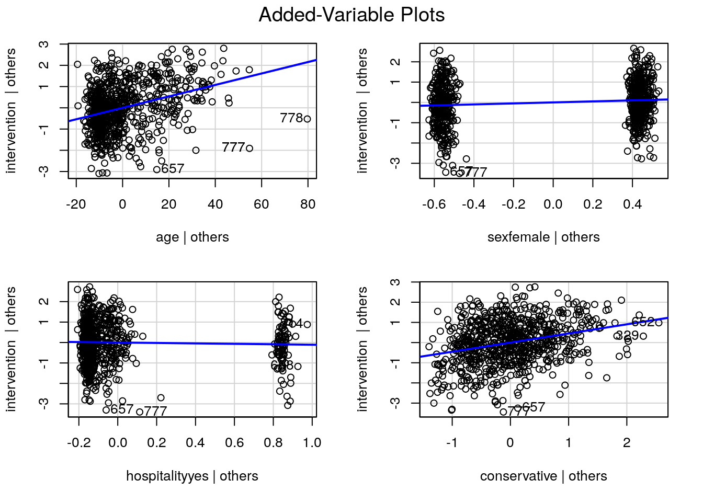
For example, the AV plot for age clearly suggests that observations with row numbers 777 and 778 (i.e., ID = 357 and 212, respectively) may be dragging the positive slope of the regression line down. Given that these observations have figured above in other examinations of diagnostics, it is worth checking the model with and without them included in the data. The remaining plots suggest few issues with the other observations flagged earlier, especially row number 657.
Some researchers find AV plots so useful in assessing discrepant cases in regressions (n.b., this is not just for linear regression) that it can be handy to check out a few potential models even before running the whole regression. A quick way to do this in R would be:
car::avPlots(lm(intervention~age + sex + hospitality + conservative, data=binge))
With a large number of potential variables and models, a few checks like this would be time savers.
4.4 Running regressions dropping influential observations
If the original regression has been run already, as above, the model can be updated easily with the update() function (from base R) and this facilitates keeping track of the original model vs models derived without one or more influential observation and can ultimately guide changes to the data frame that will be incorporated for all future analyses. It is easiest now to demonstrate and then explain.
- remove observation with row number 777 and re-run the regression, putting it into an aptly named new object (i.e., regint.no777)
- note the use of subset() again to specify which row(s) to drop;
- note
-c; the minus before the c tells subset() to keep all but row 777.
- note
##
## Call:
## lm(formula = intervention ~ age + sex + hospitality + conservative,
## data = binge, subset = -c(777))
##
## Residuals:
## Min 1Q Median 3Q Max
## -3.3379 -0.6541 0.0428 0.7282 2.7023
##
## Coefficients:
## Estimate Std. Error t value Pr(>|t|)
## (Intercept) 2.415669 0.160030 15.095 < 2e-16 ***
## age 0.028247 0.002762 10.228 < 2e-16 ***
## sexfemale 0.238829 0.075736 3.153 0.00168 **
## hospitalityyes -0.102198 0.117672 -0.869 0.38539
## conservative 0.451477 0.055295 8.165 1.31e-15 ***
## ---
## Signif. codes: 0 '***' 0.001 '**' 0.01 '*' 0.05 '.' 0.1 ' ' 1
##
## Residual standard error: 1.046 on 772 degrees of freedom
## Multiple R-squared: 0.2163, Adjusted R-squared: 0.2122
## F-statistic: 53.27 on 4 and 772 DF, p-value: < 2.2e-16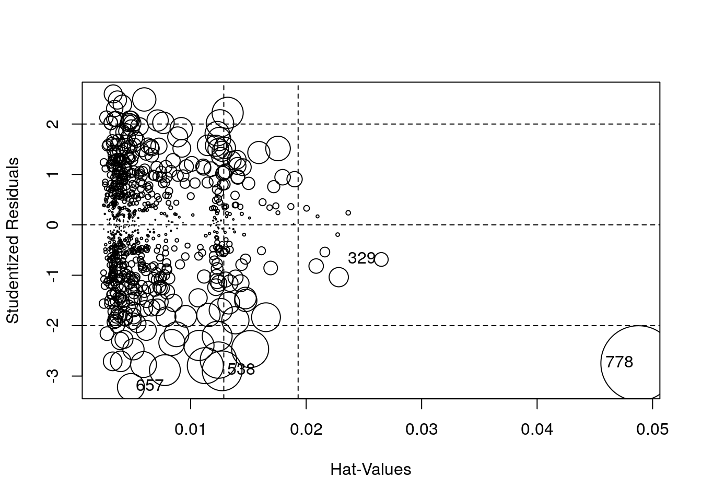
## StudRes Hat CookD
## 329 -0.6867289 0.026508375 0.002570093
## 538 -2.8964020 0.012724309 0.021419354
## 657 -3.2185725 0.004829036 0.009933124
## 778 -2.7470743 0.048778274 0.076744676- check the results as usual.
- note that 777 is now gone, but 778 still potentially a problem
- can drop more than one case but must drop all cases together, not piecemeal
- it’s very simple: just keep adding row numbers to the c(…, …)
- assign every row in binge except 777 and 778 to a new data frame object, binge.clean
- by doing so, you will have produced a dataset without influential cases without having to change the original data
- can incorporate into the original read or just include both lines at the top of new code files for analysis with this data.
regint.clean <- lm(intervention~age + sex + hospitality + conservative, data=binge.clean)